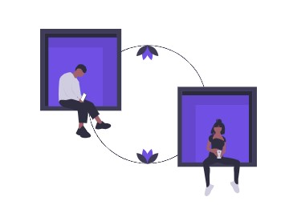
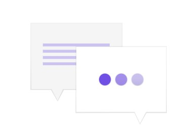

You don't want yet-another platform to sign up to, let alone yet-another-app to install. All you need to do is press chat - that's it! We work with the tools you already have. And our active listeners receive your message anonymously on their messenger of choice - Facebook Messenger, WhatsApp or Telegram. We built this to be completely frictionless, and allow for rapid scaling - in order to support as many people as possible, and be there when the world needs us the most.


Professional therapy provides individuals with a supportive environment to address mental health concerns and personal challenges. Therapists are trained to offer evidence-based techniques to help clients develop coping strategies and improve their well-being. Through regular sessions, individuals can gain insights into their thoughts, feelings, and behaviors, facilitating personal growth and healing. Therapy can address a range of issues, including anxiety, depression, trauma, and relationship problems. It fosters a safe space for expressing emotions and exploring solutions. Professional therapy emphasizes confidentiality, ensuring clients can share openly without judgment. Overall, it is a valuable resource for anyone seeking to enhance their mental and emotional health.